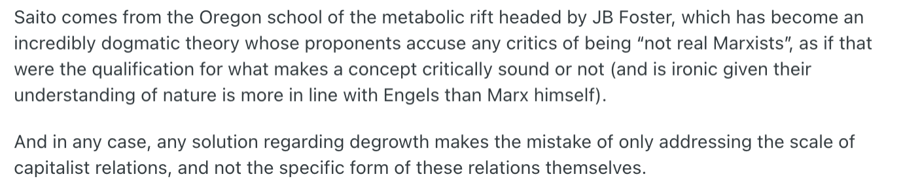
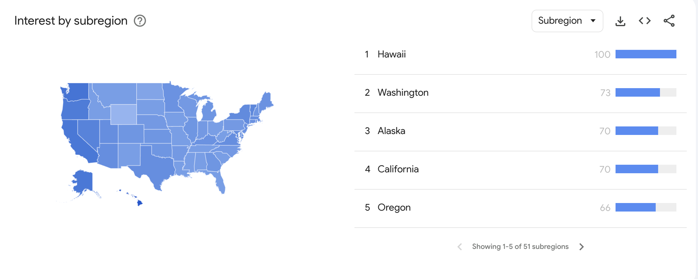
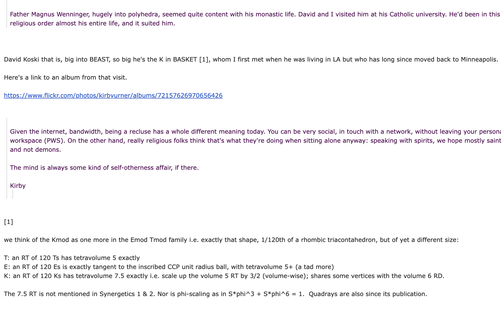

I am reproducing, with permission, a part of a conversation I had with Kirby Urner via email.
Email 1: from me, to Kirby

So, I came across the above ^
Re: Cascadia, location-based schools of thought
This came about when I was looking into the "hikikomori" phenomenon; a "crisis" of shut-ins originating from Japan. Many of these hikikos are miserable, and a large part of their suffering comes from the stigma around mental health and welfare in Japan. Saito was one of the few hiki-positive philosophers I could find from the far East.
To put my finger on the pulse of an issue, I usually do a quick Google trends search [1] as a proxy to see where ideas are being discussed. Lo and behold, "hikikomori" is distinctly regional in the U.S.; of course Hawaii will be number one on the list, due to the Japanese diaspora, but Washington, Oregon, and California all crack the top 5 and I don't think it's a coincidence.
What do all the west coast states have in common? The typical pundit will say "they're strong blue," but that's not quite hitting it all the way home. After all, look at a geographic map of these states and you will see they have more red counties than blue ones. What *really* ties them together is a sort of Cascadian-flavored hippy-dippy-ness: experimentation with psychadelics, beatnik and flower power movements, and a general inclination towards introversion and introspection beyond what is stereotypical of any other state. (see: Seattle freeze)
If I had to give Cascadia a Myers-Briggs type, it would definitely be both introverted and intuitive. Stark contrast to say, Oklahoma with its quintessential "southern niceness" (Oregonians are polite for the most part, but can seem rather disinterested or cold by comparison) or the uber-dense regions of the east-coast with their shoebox apartments, where being a shut-in is a much less realistic possibility.
Also, a quick trends search will show that Oregon and California also top the list of searches for "DoorDash," which I take to resonate with this neo-hermit lifestyle.
I say, embrace it. Why are people feeling like a failure for not pushing papers around for $19 an hour, when they have all the time in the world to consume and create on their own terms? I think Bucky would see this as a renaissance. I am much less of a Marxist "means of productions" kind of guy, and more so of the Andrew Yang "jobs aren't the only form of meaningful work" and "GDP isn't the definitive measure of well-being" kind of guy.
Think about the average Japanese salaryman; they are more or less an anonymous Andy (or I guess anonymous Akio would be more faithful) who is overworked and has little time to find meaning outside the collectivist pastiche of a 60-hour work week. To many, that might be meaningful, but the Cascadian way is antithetical to this - it is the reason why we have a Silicon Forest and not a Western Wall Street: because we decided that microdosing LSD and vibe coding was more important.
So, for someone to escape the rat race, either because they have to (disability) or they can afford to (retirement or generational wealth), I think that should be celebrated... quietly, of course. But that does not mean the person does not contribute value to society, maybe even in some cases more value than a paper pusher; emotional investment, caretaking, creative arts, self-studying, "language gaming," Quad-Crafting, etc.
With the explosion of books such as "Thinking: Fast and Slow" and Cal Newport's "Deep Work," I think that Type-B people will finally see their day in the Sun; or rather, in the moon. Because, fuck the Sun (it's too damn hot)
[1]

Email 2: Kirby to me
As I was reading your graphs on hikikomori, a concept I know but need to spell automatically (because it's a useful word I'll likely wanna keep using, especially if I know others who are into it), I had this silly vision of a reality TV show, kinda loud and garish (like they are) in which we round up a bunch of volunteer hikikomori and fly them the DisneyLand (or maybe World!). Hikikomori Go To Disney World!
I think I'm getting it down (the spelling), typing it again and again on Mr. iPad here.
The question is: how would other hikikomori react, even to this as a thought experiment? The devil is in the details prolly. In my version, each participant would be sensitively profiled, their interests, their stories, whatever they wanna let us know.
I'm thinking only a subspecies of hikikomori would be amenable to this kind of breakout adventure. The promise is they'd all go back to their hermit lifestyle a few thou richer, but otherwise left undisturbed, undoxed, although there'd be a way for fans watching, to later make contact, if the protagonist in question allowed it (might even be mediated if not moderated communication, if down through the show i.e. they'd be free as anyone to pursue contacts outside of the show infrastructure). Now my imagination is in overdrive it seems.
To keep it more Cascadian, we could bring them to OMSI. Visit some food carts. Go back to isolation. Keep having cohorts. Outings for Introverts, could be a business (minus the reality TV emphasis).
But I'm still thinking about reactions. Would it seem a sellout, would these hikikomori watching from their caves feel envy, anger, a sense they were being exploited. All over the map? the hikikomori going to Disneyland traitors or lucky or what? Is there an ideology that would judge this some violation of the pact? Sometimes on TikTok an influencer will betray viewers and "sell out" in some way (it's a pattern). Would that apply here?
The other thing I'm thinking is how many historically have craved and/or gotten a fairly sequestered life. One of my critiques of our society is we don't really offer that option on such a scale, as the religious orders have become fewer and further between, and why can't a secular lifestyle evolve for this, why must it be run by this or that religion?
I wouldn't say joining a religious order was any guarantee of hikikomori levels of isolation, but nor was it always a case of forced incarceration by society i.e. religious folks choosing a sequestered and cloistered lifestyle, one of study, one of contemplation (a neutral term), were not by definition maladjusted or unhappy. On the contrary, societies often look to such loners, somehow self organized, for spiritual insights, advice and wisdom.
Which brings me to St. Julian of Norwich, a female, and one of the first known Christian mystics to have her works published for the ages. I'm not the expert, but her lifestyle... she basically lived in a cell, but with a slot or window to the outside, through which she interacted with the public. Apparently this configuration was far from unheard of in those times. Kind of like Lucy behind her psychology desk (vs lemonade stand) in Peanuts, but of course very different.
Father Magnus Wenninger, hugely into polyhedra, seemed quite content with his monastic life. David and I visited him at his Catholic university. He'd been in this religious order almost his entire life, and it suited him.
Given the internet, bandwidth, being a recluse has a whole different meaning today. You can be very social, in touch with a network, without leaving your personal workspace (PWS). On the other hand, really religious folks think that's what they're doing when sitting alone anyway: speaking with spirits, we hope mostly saints and not demons.
The mind is always some kind of self-otherness affair, if there.
Email 3: Kirby to me

Email 4: Me to Kirby
That's a hilarious idea, and I think most of the "true" or medical hikikomori would probably react very negatively to that, although I am in favor of appropriating the term.
As for "outings for introverts," they have sort of transitional cafés in Japan that specialize in serving hiki patrons.
St. Julian of Norwich... I think you've told me about her. Is she the one that wrote Revelations of Divine Love?
Email 5: Kirby to me
Yes, that Julian of Norwich. She had a vision of God's compassion when his only child, personified as a human, face planted right out the door.
We've become less awkward with experience, I like to think.
I saved an old Perplexity query on that score: https://www.perplexity.ai/search/which-female-saint-had-a-visio-NQlLlkJaSgK0jbfiAgNXyw
Hmm, so true Hikikomori would be offended, file that in my database, crank the handle....
I wonder what personality type, perhaps with a label (Japanese label) would typify the polar opposite of hikikomori.
Awkwardly garrulous, too friendly, a "gotta always be around other people" type, screamingly unhappy if all alone?
I think there's a socially defined female personality type in Japan, with a name, where she's always on the go go go, kind of a pep talker athletic type, a hard charger, maybe tom boy fits, but not butch necessarily. Hard to translate. I just know I've met one or two.
I remember this psychological anthropology course at Princeton (Imee Marcos was in it with me, daughter of the dictator in the Philippines -- I didn't know her there, but although we sorta traveled in similar circles given I was part of the expat elite, son of an embassy type and so on), Dr. Fernandez, about expectations around social drinking in Japan versus the USA.
In Japan, the most common stereotype of the social drinker was the after work salaryman having a drink with other coworkers, and the boss, with the expectation of people being more friendly, more loose, less stiff and formal.
In the USA, the stereotype of the barroom brawler is more common, the lone drinker, nursing grudges and the bar, and likely to become violent if provoked by a random stranger.
Different history more than different biology or genetics, is what I'm thinking.